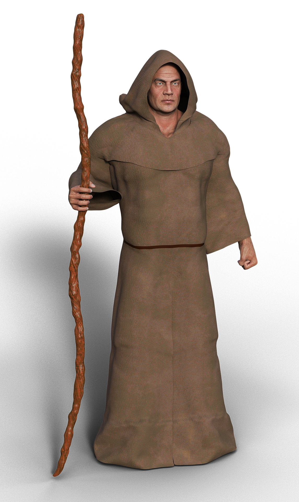
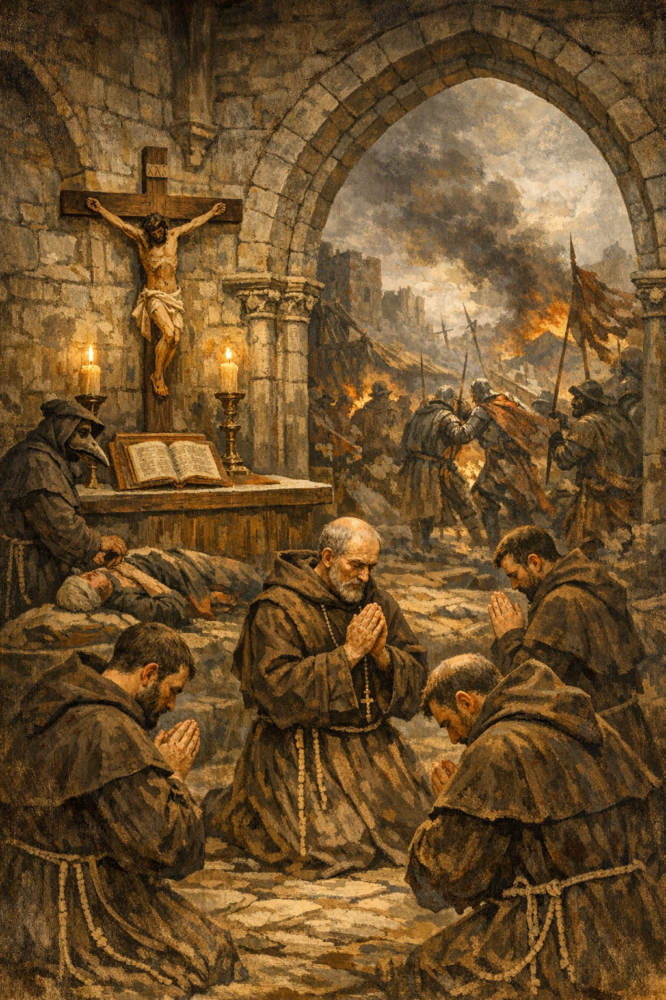

ÖLTÖZKÖDÉS

Hogy mi van rajtam? Ezt a ruhát mi, szerzetesek úgy hívjuk, hogy csuha. Ez egy durva gyapjúból készült, bő szabású, csuklyás ruha. Ez elfedi az egész testemet. Hogy miért ilyen sötét és egyszerű? Hát tudod... A Bencés rendet szolgálom, aminek az alapja az egyszerűség. Erre is törekszünk mi, Bencések. Emellett a fekete szín az örömökről való lemondást jelképezi. Ez lenne a mi öltözködésünk: egyszerű, letisztult, emellett gyakorlati és erkölcsi szempontokat szolgál.
KÖRNYEZET

Hol élek? Hát én életem nagy részét elszigetelve a külvilágtól, a kolostor négy fala közt élem. A kolostor falai vastag kőfalakból épült. Ezzel menedéket tudunk nyújtani a falu lakóinak támadás esetén. A kolostorunk központi épülete a templom, ahol a többi szerzetessel gyakran összegyűlünk közös imára. Szóval a kolostor az egy csendes, elvonulásra és imádkozásra tökéletes hely, emellett az otthonom.
KÖTELEZETTSÉGEK ÉS FÉLELMEK

A Kötelezettségeim közé tartozik a mindennapi imádság, a kétkezi munka. Három elv szerint szabályozzuk a kötelezettségeinket: a szegénység, az engedelmesség és a tisztaság. Viszont a nemrég kitört pestistől még mi is félünk. Szerencsére még a kolostorban nem voltak rá tünetek, viszont mellettünk hatalmas összecsapások vannak. Nehéz időszakot élünk. Háborúk, vírusok mindenfelé. Minden nap imátkozunk értük hogy gyógyuljanak meg, és éppségben térjenek vissza a családjukhoz.